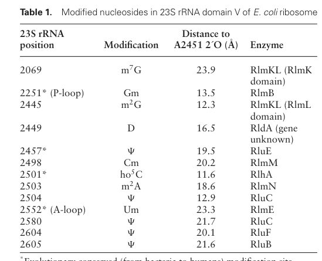

rlmE (synonyms ftsJ, rrmJ; ordered locus PP_4719) encodes a cytosolic SAM-dependent 23S rRNA (uridine2552-2'-O)-methyltransferase (EC 2.1.1.166) of the class I-like SAM-binding methyltransferase superfamily, RlmE/FtsJ family. It installs the universally conserved 2'-O-methyluridine (Um2552) in the A-loop of 23S rRNA domain V, adjacent to the peptidyl transferase center, acting late on the fully assembled 50S ribosomal subunit. Beyond catalysis, the orthologous bacterial enzyme is functionally coupled to late large ribosomal subunit (LSU) maturation/assembly; loss of RlmE in E. coli causes accumulation of free 30S/50S subunits at the expense of 70S, defective 23S rRNA end processing, cold-sensitive growth, and a ~2-4-fold growth-rate reduction. The P. putida KT2440 assignment is a conservation-based inference from these well-characterized bacterial orthologs.
| GO Term | Evidence | Action | Reason |
|---|---|---|---|
|
GO:0005737
cytoplasm
|
IEA
GO_REF:0000120 |
KEEP AS NON CORE |
Summary: The cytoplasm annotation is correct for RlmE. The enzyme is a soluble bacterial rRNA modification enzyme that acts on maturing large ribosomal subunits in the cytosol.
Reason: RlmE is a soluble bacterial rRNA modification enzyme acting on cytosolic 50S assembly intermediates; the location is accurate but non-core. Falcon deep research confirms the enzyme functions in the cytosol in association with maturing large ribosomal subunits rather than being membrane-bound or secreted.
Supporting Evidence:
file:PSEPK/rlmE/rlmE-uniprot.txt
SUBCELLULAR LOCATION: Cytoplasm
file:PSEPK/rlmE/rlmE-goa.tsv
GO:0005737 cytoplasm
file:PSEPK/rlmE/rlmE-deep-research-falcon.md
RlmE functions in the **cytosol** in association with **maturing large ribosomal subunits**
|
|
GO:0006364
rRNA processing
|
IEA
GO_REF:0000104 |
MODIFY |
Summary: rRNA processing is correct pathway context, but RlmE directly performs ribose 2'-O-methylation of 23S rRNA, so rRNA 2'-O-methylation is the more specific and accurate process term.
Reason: RlmE specifically transfers a methyl group to the 2'-O position of the ribose of uridine 2552 in 23S rRNA. The generic rRNA processing parent is therefore best replaced with the precise process GO:0000451 rRNA 2'-O-methylation, which captures the exact chemistry. Falcon deep research confirms the enzyme installs Um2552 (2'-O-methyluridine) in the A-loop of 23S rRNA.
Proposed replacements:
rRNA 2'-O-methylation
Supporting Evidence:
file:PSEPK/rlmE/rlmE-uniprot.txt
Specifically methylates the uridine in position 2552 of 23S
file:PSEPK/rlmE/rlmE-goa.tsv
GO:0006364 rRNA processing
file:PSEPK/rlmE/rlmE-deep-research-falcon.md
transfer of a methyl group from **S-adenosyl-L-methionine (SAM)** to the **2′-O** position of **U2552** in 23S rRNA
|
|
GO:0008168
methyltransferase activity
|
IEA
GO_REF:0000002 |
MARK AS OVER ANNOTATED |
Summary: This generic methyltransferase parent is over-annotated for RlmE; the specific substrate and modified nucleotide are captured by GO:0008650.
Reason: GO:0008650 (rRNA uridine-2'-O-ribose methyltransferase activity) captures the specific rRNA substrate and modified nucleotide. Falcon deep research confirms RlmE is a SAM-dependent RNA 2'-O-methyltransferase specific for the 23S rRNA ribose 2'-hydroxyl.
Supporting Evidence:
file:PSEPK/rlmE/rlmE-uniprot.txt
EC=2.1.1.166
file:PSEPK/rlmE/rlmE-goa.tsv
GO:0008168 methyltransferase activity
file:PSEPK/rlmE/rlmE-deep-research-falcon.md
SAM-dependent RNA 2′-O-methyltransferase** that modifies the **ribose 2′-hydroxyl**
|
|
GO:0008173
RNA methyltransferase activity
|
IEA
GO_REF:0000118 |
MARK AS OVER ANNOTATED |
Summary: RNA methyltransferase activity is true but less specific than the RlmE-specific activity term GO:0008650.
Reason: GO:0008650 captures the exact 23S rRNA uridine 2'-O-ribose methyltransferase activity, including the specific substrate (U2552 in 23S rRNA). Falcon deep research confirms the enzyme installs the universally conserved Um2552 modification in 23S rRNA.
Supporting Evidence:
file:PSEPK/rlmE/rlmE-uniprot.txt
Specifically methylates the uridine in position 2552 of 23S
file:PSEPK/rlmE/rlmE-goa.tsv
GO:0008173 RNA methyltransferase activity
file:PSEPK/rlmE/rlmE-deep-research-falcon.md
it is responsible for installing the universally conserved modification
|
|
GO:0008650
rRNA (uridine-2'-O-ribose)-methyltransferase activity
|
IEA
GO_REF:0000120 |
ACCEPT |
Summary: RlmE-specific rRNA uridine 2'-O-ribose methyltransferase activity is the core molecular function, supported by EC 2.1.1.166 and the Rhea reaction for Um2552 formation.
Reason: UniProt assigns EC 2.1.1.166 and the Rhea reaction for uridine 2552 2'-O-ribose methylation in 23S rRNA. Falcon deep research independently confirms the SAM-dependent transfer of a methyl group to the 2'-O position of U2552 in 23S rRNA, generating Um2552.
Supporting Evidence:
file:PSEPK/rlmE/rlmE-uniprot.txt
Specifically methylates the uridine in position 2552 of 23S
file:PSEPK/rlmE/rlmE-uniprot.txt
EC=2.1.1.166
file:PSEPK/rlmE/rlmE-goa.tsv
GO:0008650 rRNA (uridine-2'-O-ribose)-methyltransferase activity
file:PSEPK/rlmE/rlmE-deep-research-falcon.md
transfer of a methyl group from **S-adenosyl-L-methionine (SAM)** to the **2′-O** position of **U2552** in 23S rRNA
|
|
GO:0000027
ribosomal large subunit assembly
|
IEA
GO_REF:0000120 |
NEW |
Summary: RlmE is functionally coupled to late 50S/LSU maturation; the orthologous bacterial enzyme stimulates large ribosomal subunit assembly and its loss causes severe LSU assembly defects. This is a proposed NEW biological-process annotation not present in the current GOA, supported by falcon deep research evidence (conservation-based inference from E. coli).
Reason: Beyond installing Um2552, RlmE acts like a large-subunit assembly factor. Falcon deep research reports that RlmE stimulates large ribosomal subunit assembly and that ΔrlmE in E. coli produces a severe LSU assembly phenotype. GO:0000027 (ribosomal large subunit assembly) captures this process role for the P. putida ortholog.
Supporting Evidence:
file:PSEPK/rlmE/rlmE-deep-research-falcon.md
RlmE **stimulates large ribosomal subunit assembly**
file:PSEPK/rlmE/rlmE-deep-research-falcon.md
ΔrlmE** in *E. coli* produces a **severe LSU assembly phenotype**
file:PSEPK/rlmE/rlmE-deep-research-falcon.md
RlmE can act like an **assembly factor** in addition to catalyzing methylation
|
Q: Does loss of RlmE in P. putida KT2440 alter ribosome assembly or translation stress phenotypes under environmental stress, as it does in E. coli?
Q: Is the assembly-stimulating role of RlmE in P. putida separable from its catalytic (Um2552-forming) activity, as has been suggested for E. coli RlmE?
Experiment: Profile 23S rRNA methylation (Um2552 stoichiometry by RiboMethSeq/mass spectrometry) and ribosome assembly (sucrose-gradient subunit profiles) in P. putida rlmE knockout and complemented strains.
Type: rRNA modification mapping
Experiment: Express catalytically dead RlmE active-site mutants in a P. putida rlmE deletion background to test whether assembly stimulation is separable from methyltransferase chemistry.
Type: structure-function complementation
The research report should be a detailed narrative explaining the function, biological processes, and localization of the gene product. Citations should be given for all claims.
You should prioritize authoritative reviews and primary scientific literature when conducting research. You can supplement
this with annotations you find in gene/protein databases, but these can be outdated or inaccurate.
We are specifically interested in the primary function of the gene - for enzymes, what reaction is catalyzed, and what is the substrate specificity? For transporters, what is the substrate? For structural proteins or adapters, what is the broader structural role? For signaling molecules, what is the role in the pathway.
We are interested in where in or outside the cell the gene product carries out its function.
We are also interested in the signaling or biochemical pathways in which the gene functions. We are less interested in broad pleiotropic effects, except where these elucidate the precise role.
Include evidence where possible. We are interested in both experimental evidence as well as inference from structure, evolution, or bioinformatic analysis. Precise studies should be prioritized over high-throughput, where available.
The UniProt target provided (Q88DV0; PP_4719) is annotated as ribosomal RNA large subunit methyltransferase E with synonyms ftsJ and rrmJ, and EC 2.1.1.166, i.e., the bacterial enzyme that forms Um2552 (2′-O-methyluridine at position 2552) in 23S rRNA. The retrieved primary literature consistently uses RlmE ≡ FtsJ ≡ RrmJ for the enzyme catalyzing 2′-O-methylation of U2552 in the 23S rRNA A-loop, matching the UniProt description and ruling out a different “rlmE” usage in the gathered corpus. (hager2004substratebindinganalysis pages 1-2, ero2024ribosomalrnamodification pages 1-2, ero2024ribosomalrnamodification pages 2-3)
Limitation (organism-specificity): In the documents retrieved with the tools in this run, I did not find a paper that experimentally characterizes P. putida KT2440 PP_4719/Q88DV0 directly. Therefore, the functional annotation below for P. putida is based on strong orthology/conservation and direct experimental evidence from other bacteria, particularly E. coli, where the same enzyme and modification site are conserved. (hager2004substratebindinganalysis pages 1-2, ero2024ribosomalrnamodification pages 1-2, ero2024ribosomalrnamodification media c9fd6e76)
RlmE is a SAM-dependent RNA 2′-O-methyltransferase that modifies the ribose 2′-hydroxyl of a specific uridine in the large-subunit rRNA. In bacteria, it is responsible for installing the universally conserved modification Um2552 in 23S rRNA. (hager2004substratebindinganalysis pages 1-2, ero2024ribosomalrnamodification pages 1-2)
Reaction (EC 2.1.1.166): transfer of a methyl group from S-adenosyl-L-methionine (SAM) to the 2′-O position of U2552 in 23S rRNA, yielding Um2552 (2′-O-methyluridine) and S-adenosyl-L-homocysteine (SAH). RrmJ/FtsJ was explicitly described as catalyzing 2′-O methylation of U2552 in the A-loop of 23S rRNA. (hager2004substratebindinganalysis pages 1-2)
Substrate locus: U2552 is in the A-loop (23S rRNA domain V) adjacent to functionally critical nucleotides in the peptidyl transferase center (PTC) region; recent structural mapping places Um2552 adjacent to G2553, an essential base that anchors the 3′-CCA end of A-site tRNA. (ero2024ribosomalrnamodification pages 2-3, ero2024ribosomalrnamodification media c9fd6e76)
A central contemporary view is that many rRNA modification enzymes do more than “decorate” rRNA; they can also promote ribosomal subunit assembly. RlmE is a key example: loss of the protein perturbs 50S/LSU assembly, and RlmE can act like an assembly factor in addition to catalyzing methylation. (ero2024ribosomalrnamodification pages 1-2, ero2024ribosomalrnamodification pages 1-1)
While the retrieved texts do not provide a dedicated subcellular-localization experiment for RlmE in P. putida, the enzyme’s substrate (23S rRNA) and the described phenotypes (LSU assembly intermediates; rRNA processing defects) support that RlmE functions in the cytosol in association with maturing large ribosomal subunits rather than being membrane-bound or secreted. (hager2004substratebindinganalysis pages 1-2, ero2024ribosomalrnamodification pages 10-11, ero2024ribosomalrnamodification pages 7-8)
A biochemical/structural analysis of RrmJ (FtsJ) emphasized a conserved positively charged ridge implicated in 23S rRNA binding and proposed a two-step pathway: (i) the A-loop undocks from the packed 50S subunit and (ii) base flipping of U2552 exposes the ribose 2′-OH for methyl transfer. This model explicitly links catalysis to rRNA conformational dynamics in assembled particles. (hager2004substratebindinganalysis pages 1-2)
Evidence supports that RlmE acts late in large-subunit maturation. Hager et al. report that only fully assembled 50S subunits were substrates in vitro, whereas naked 23S rRNA or immature particles were not methylated, supporting late-stage accessibility of the A-loop for modification. (hager2004substratebindinganalysis pages 1-2)
A 2024 Nucleic Acids Research study systematically tested multiple 23S rRNA modification enzymes located around the PTC and found that, beyond the established role of RlmE in Um2552 formation, RlmE stimulates large ribosomal subunit assembly and is among enzymes whose absence produces clear assembly phenotypes. The work supports the concept of mutual interdependence between rRNA modification and LSU assembly and highlights that some modification enzymes can stimulate assembly independent of catalytic activity (in general), placing RlmE within a broader “assembly-stimulator” class. (ero2024ribosomalrnamodification pages 1-1, ero2024ribosomalrnamodification pages 1-2)
The same 2024 study summarizes that ΔrlmE in E. coli produces a severe LSU assembly phenotype and a ~2–4-fold reduction in growth rate, and further reports cold-sensitive growth and accumulation of late-stage assembly intermediates with incomplete processing of 23S rRNA ends (extended +3/+7 nt signatures). (ero2024ribosomalrnamodification pages 2-3, ero2024ribosomalrnamodification pages 10-11, ero2024ribosomalrnamodification pages 7-8)
In this tool-based retrieval, no 2023–2024 primary study was found that experimentally dissects P. putida KT2440 PP_4719/Q88DV0 specifically. Thus, recent advances are incorporated via high-confidence cross-bacterial conservation, using E. coli as the primary experimental reference system. (ero2024ribosomalrnamodification pages 1-2, ero2024ribosomalrnamodification media c9fd6e76)
RlmE participates in 23S rRNA maturation and late 50S/LSU biogenesis, centered on the PTC-adjacent region of 23S rRNA domain V. The Um2552 site is located in the A-loop, a functionally important loop engaging A-site tRNA interactions, consistent with observed impacts on assembly and translation efficiency when the enzyme is absent. (hager2004substratebindinganalysis pages 1-2, ero2024ribosomalrnamodification pages 2-3, ero2024ribosomalrnamodification pages 10-11)
PTC-proximal modified nucleotides cluster near the catalytic core; the 2024 structural mapping highlights the location of Um2552 among other domain V modifications surrounding the PTC. This supports a model where RlmE’s product can contribute to local rRNA conformational stability and assembly progression in this region. (ero2024ribosomalrnamodification pages 1-2, ero2024ribosomalrnamodification media c9fd6e76, ero2024ribosomalrnamodification media 174e05f1)
A 2021 review describes how rRNA 2′-O-methylation (2′Ome) is studied using historical and modern methodologies, including primer extension/RTL-PCR and mass spectrometry, and highlights RNA-seq–based approaches (e.g., RiboMeth-seq principle) that can map rRNA 2′Ome sites in a single experiment and enable quantitative comparisons across samples and conditions—important for both basic research and translational studies. (jaafar20212′oribosemethylationof pages 3-4)
A 2024 methods-focused thesis describes multiple current high-throughput mapping approaches for 2′-O-methylation (including RiboMethSeq, 2’OMe-seq, RibOxi-Seq, Nm-Seq) and notes a practical implementation detail: adaptation to Illumina sequencing reduced required input by ~1,000×, enabling analysis of clinical samples. These methods are directly relevant for confirming Um2552 presence/stoichiometry and for surveying broader RNA modification landscapes. (pichot2024optimisationofnext pages 20-22)
Work on RNA modification mutants under sub-MIC antibiotics demonstrates an application domain: identifying rRNA/tRNA modification enzymes that modulate fitness under antibiotic stress, not necessarily by classic resistance mechanisms but via translation reprogramming and stress tolerance. A TN-seq study under sub-MIC antibiotics found enrichment of RNA modification genes among loci affecting fitness and provides gene-level fitness signatures (including for rlmE/rrmJ in their system). (babosan2022nonessentialtrnaand pages 2-3, babosan2022nonessentialtrnaand pages 3-4)
Although not RlmE-specific, high-resolution structures of bacterial rRNA 2′-O methyltransferases (e.g., RlmM) demonstrate a widely used implementation pattern: combine knockout strains, in vitro transcribed rRNA substrates, and crystal structures of enzyme–SAM complexes to dissect substrate recognition, define assembly stage specificity, and enable structure-informed hypotheses relevant to antimicrobial targeting of ribosome biogenesis factors. (punekar2012crystalstructureof pages 1-1)
Two evidence streams converge: (i) classical biochemical work that places RrmJ action on assembled 50S and relates loss of the enzyme to subunit/70S imbalance and impaired translation, and (ii) 2024 systems-level genetic/biogenesis work showing RlmE is uniquely impactful among tested modification enzymes for LSU assembly and may contribute to assembly beyond catalytic methyl transfer. Together these support an expert interpretation that RlmE is best annotated not only as 23S rRNA Um2552 methyltransferase, but also as a factor functionally integrated into late LSU maturation. (hager2004substratebindinganalysis pages 1-2, ero2024ribosomalrnamodification pages 10-11, ero2024ribosomalrnamodification pages 1-2)
Given the high conservation of the Um2552 modification and the consistent functional requirement for RlmE in bacterial LSU assembly, the most defensible annotation for P. putida KT2440 Q88DV0 is:
- Molecular function: SAM-dependent rRNA 2′-O-methyltransferase specific for 23S rRNA U2552.
- Biological process: large ribosomal subunit maturation/assembly, likely at a late stage.
- Cellular component: cytosol; large ribosomal subunit assembly intermediates (inferred from function/phenotypes).
This is a conservation-based inference; organism-specific phenotypic magnitude in P. putida remains to be experimentally confirmed. (hager2004substratebindinganalysis pages 1-2, ero2024ribosomalrnamodification pages 10-11)
Two structured summaries are provided below.
| Feature | Evidence-based detail | Key sources (author year, DOI) |
|---|---|---|
| Reaction | RlmE/FtsJ/RrmJ (EC 2.1.1.166) catalyzes SAM-dependent 2'-O-methylation of U2552 in 23S rRNA, generating Um2552. The modification is attributed to RlmE in domain V of the large-subunit rRNA. (hager2004substratebindinganalysis pages 1-2, ero2024ribosomalrnamodification pages 1-2) | Hager et al. 2004, 10.1128/JB.186.19.6634-6642.2004; Ero et al. 2024, 10.1093/nar/gkae222 |
| Substrate / structural location | The target nucleotide is U2552 in the A-loop of 23S rRNA domain V, near the peptidyl transferase center; recent mapping places Um2552 adjacent to G2553, an essential residue that anchors the 3'-CCA end of A-site tRNA. (hager2004substratebindinganalysis pages 1-2, ero2024ribosomalrnamodification pages 2-3, ero2024ribosomalrnamodification media c9fd6e76) | Hager et al. 2004, 10.1128/JB.186.19.6634-6642.2004; Ero et al. 2024, 10.1093/nar/gkae222 |
| Timing in ribosome biogenesis | Evidence supports action at a late stage of large-subunit biogenesis. Hager et al. reported that only fully assembled 50S subunits were substrates in vitro, whereas naked 23S rRNA or immature particles were not; Ero et al. likewise place RlmE among factors acting during late LSU assembly. (hager2004substratebindinganalysis pages 1-2, ero2024ribosomalrnamodification pages 10-11) | Hager et al. 2004, 10.1128/JB.186.19.6634-6642.2004; Ero et al. 2024, 10.1093/nar/gkae222 |
| Deletion phenotype: ribosome profile | rlmE/rrmJ deletion causes accumulation of free 30S and 50S subunits at the expense of 70S ribosomes, consistent with defective subunit maturation/association. (hager2004substratebindinganalysis pages 1-2) | Hager et al. 2004, 10.1128/JB.186.19.6634-6642.2004 |
| Deletion phenotype: translation / growth | Loss of RlmE decreases translational efficiency and causes a growth disadvantage; Ero et al. summarize a notable ~2-4-fold decrease in growth rate for ΔrlmE in E. coli. (hager2004substratebindinganalysis pages 1-2, ero2024ribosomalrnamodification pages 2-3) | Hager et al. 2004, 10.1128/JB.186.19.6634-6642.2004; Ero et al. 2024, 10.1093/nar/gkae222 |
| Deletion phenotype: temperature sensitivity | Absence of RlmE causes cold-sensitive growth, with defects becoming more pronounced at lower temperature. (ero2024ribosomalrnamodification pages 10-11, ero2024ribosomalrnamodification pages 4-5) | Ero et al. 2024, 10.1093/nar/gkae222 |
| Deletion phenotype: assembly intermediates / rRNA processing | Recent work shows that strains lacking RlmE accumulate incompletely assembled LSU particles and exhibit defects in 23S rRNA 5' end maturation, including persistence of precursor ends extended by +3 or +7 nt; ΔrlmE intermediates also show structural perturbations near PTC helices and can lack bL36. (ero2024ribosomalrnamodification pages 10-11, ero2024ribosomalrnamodification pages 7-8) | Ero et al. 2024, 10.1093/nar/gkae222 |
| Mechanistic / structural features | RrmJ/RlmE contains a conserved positively charged ridge implicated in 23S rRNA binding. A two-step model proposes A-loop undocking from the packed 50S particle followed by base flipping of U2552 to expose the ribose 2'-OH for methyl transfer; active-site mutants fail to rescue the deletion phenotype. (hager2004substratebindinganalysis pages 1-2) | Hager et al. 2004, 10.1128/JB.186.19.6634-6642.2004 |
| Non-catalytic role in assembly | Beyond installing Um2552, RlmE appears to stimulate LSU assembly; recent analysis suggests this contribution can be at least partly independent of methyltransferase chemistry, placing RlmE among rRNA-modification enzymes that also function as assembly factors. (ero2024ribosomalrnamodification pages 1-2, ero2024ribosomalrnamodification pages 2-3, ero2024ribosomalrnamodification pages 1-1) | Ero et al. 2024, 10.1093/nar/gkae222 |
| Pseudomonas putida KT2440-specific evidence | In the provided evidence set, no direct experimental study of PP_4719/Q88DV0 from P. putida KT2440 was retrieved. Functional annotation for Q88DV0 is therefore supported primarily by strong orthology/conservation with bacterial RlmE/FtsJ/RrmJ enzymes and by the conserved assignment of Um2552-forming activity. (ero2024ribosomalrnamodification pages 1-2, ero2024ribosomalrnamodification media c9fd6e76) | Ero et al. 2024, 10.1093/nar/gkae222 |
Table: This table compiles evidence-supported functional annotation points for bacterial RlmE/FtsJ/RrmJ, including catalytic activity, substrate position, assembly timing, and phenotypes of loss. It is useful as a compact reference for annotating the Pseudomonas putida KT2440 ortholog by conserved function.
| System/organism | Perturbation | Quantitative outcome | Assay/condition | Citation (include DOI) |
|---|---|---|---|---|
| Escherichia coli | ΔrlmE (single knockout) | Growth rate decreased by ~2–4-fold | Growth phenotype summarized in a 2024 study of 23S rRNA modification enzymes around the peptidyl transferase center | Ero et al. 2024, DOI: 10.1093/nar/gkae222 (ero2024ribosomalrnamodification pages 2-3) |
| Escherichia coli | Absence of RlmE | Cold-sensitive growth; defect is more pronounced at lower temperature | Ribosome biogenesis/growth analysis, including comparison at 30 °C vs 37 °C | Ero et al. 2024, DOI: 10.1093/nar/gkae222 (ero2024ribosomalrnamodification pages 10-11, ero2024ribosomalrnamodification pages 4-5) |
| Escherichia coli | ΔrlmE / rrmJ deletion | Accumulation of free 30S and 50S subunits at the expense of 70S ribosomes; decreased translational efficiency and growth disadvantage | Ribosome profile and translation phenotype in rrmJ deletion strains | Hager et al. 2004, DOI: 10.1128/JB.186.19.6634-6642.2004 (hager2004substratebindinganalysis pages 1-2) |
| Escherichia coli | Absence of RlmE | Accumulation of incompletely assembled LSU particles; 23S rRNA 5′ ends remain extended by +3 or +7 nt; 45S precursor can lack bL36 | Late LSU assembly and 23S rRNA processing analysis | Ero et al. 2024, DOI: 10.1093/nar/gkae222 (ero2024ribosomalrnamodification pages 10-11, ero2024ribosomalrnamodification pages 7-8) |
| Vibrio cholerae | rlmE/rrmJ inactivation | CIP: +825, P = .003 | TN-seq after 16 generations in sub-MIC ciprofloxacin | Babosan et al. 2022, DOI: 10.1093/femsml/uqac019 (babosan2022nonessentialtrnaand pages 3-4) |
| Vibrio cholerae | rlmE/rrmJ inactivation | TOB: +1.2, NS | TN-seq after 16 generations in sub-MIC tobramycin | Babosan et al. 2022, DOI: 10.1093/femsml/uqac019 (babosan2022nonessentialtrnaand pages 3-4) |
| Vibrio cholerae | RNA modification genes (context, not specific to rlmE) | 2.43× enrichment, P = 4.56 × 10⁻⁴; 23/80 hits for TOB | TN-seq enrichment of RNA modification genes affecting fitness under sub-MIC tobramycin | Babosan et al. 2022, DOI: 10.1093/femsml/uqac019 (babosan2022nonessentialtrnaand pages 2-3) |
| Vibrio cholerae | tRNA modification genes (context, not specific to rlmE) | 1.57× enrichment, P = 2.3 × 10⁻²; 20/48 hits for CIP | TN-seq enrichment of tRNA/RNA modification genes affecting fitness under sub-MIC ciprofloxacin | Babosan et al. 2022, DOI: 10.1093/femsml/uqac019 (babosan2022nonessentialtrnaand pages 2-3) |
| Escherichia coli | Δ10 strain lacking 10 23S rRNA modification enzymes around the PTC (context including RlmE pathway) | Strain is viable but shows severely compromised growth and ribosome assembly, especially at lower temperature | Multi-gene deletion analysis of PTC-region modification enzymes | Ero et al. 2024, DOI: 10.1093/nar/gkae222 (ero2024ribosomalrnamodification pages 1-1) |
Table: This table compiles the main quantitative and phenotype-level findings relevant to RlmE/FtsJ/RrmJ, including direct ΔrlmE effects in E. coli and antibiotic-fitness data from V. cholerae. It is useful for functional annotation because it separates direct enzyme-linked evidence from broader RNA-modification context.
Key data highlights from the cited primary studies include: (i) ~2–4× growth-rate decrease upon ΔrlmE in E. coli (2024), (ii) strong antibiotic-condition-dependent fitness effects of rlmE/rrmJ in TN-seq (e.g., CIP +825; P = 0.003 in the referenced dataset), and (iii) enrichment of RNA modification genes among loci affecting fitness under sub-MIC antibiotics (e.g., 2.43× enrichment; P = 4.56×10−4 for TOB). (ero2024ribosomalrnamodification pages 2-3, babosan2022nonessentialtrnaand pages 3-4, babosan2022nonessentialtrnaand pages 2-3)
The 2024 Nucleic Acids Research paper includes a table mapping Um2552 to RlmE and a structural view showing the positions of PTC-region modifications (including U2552) in 23S rRNA domain V, supporting both the enzyme–site assignment and the functional context near the PTC. (ero2024ribosomalrnamodification media c9fd6e76, ero2024ribosomalrnamodification media 174e05f1)
For Pseudomonas putida KT2440, rlmE (PP_4719; UniProt Q88DV0) is best annotated as a cytosolic SAM-dependent 23S rRNA 2′-O-methyltransferase that methylates U2552 in the 23S rRNA A-loop to produce Um2552, and as a factor functionally coupled to late 50S/LSU assembly. This conclusion is strongly supported by conserved bacterial evidence (notably E. coli), including mechanistic models of A-loop rearrangement/base flipping, and phenotypes where loss of RlmE perturbs 70S formation, translation efficiency, growth, and cold-temperature ribosome assembly. (hager2004substratebindinganalysis pages 1-2, ero2024ribosomalrnamodification pages 2-3, ero2024ribosomalrnamodification pages 10-11, ero2024ribosomalrnamodification media c9fd6e76)
References
(hager2004substratebindinganalysis pages 1-2): Jutta Hager, Bart L. Staker, and Ursula Jakob. Substrate binding analysis of the 23s rrna methyltransferase rrmj. Journal of Bacteriology, 186:6634-6642, Oct 2004. URL: https://doi.org/10.1128/jb.186.19.6634-6642.2004, doi:10.1128/jb.186.19.6634-6642.2004. This article has 45 citations and is from a peer-reviewed journal.
(ero2024ribosomalrnamodification pages 1-2): Rya Ero, Margus Leppik, Kaspar Reier, Aivar Liiv, and Jaanus Remme. Ribosomal rna modification enzymes stimulate large ribosome subunit assembly in e. coli. Nucleic Acids Research, 52:6614-6628, Mar 2024. URL: https://doi.org/10.1093/nar/gkae222, doi:10.1093/nar/gkae222. This article has 24 citations and is from a highest quality peer-reviewed journal.
(ero2024ribosomalrnamodification pages 2-3): Rya Ero, Margus Leppik, Kaspar Reier, Aivar Liiv, and Jaanus Remme. Ribosomal rna modification enzymes stimulate large ribosome subunit assembly in e. coli. Nucleic Acids Research, 52:6614-6628, Mar 2024. URL: https://doi.org/10.1093/nar/gkae222, doi:10.1093/nar/gkae222. This article has 24 citations and is from a highest quality peer-reviewed journal.
(ero2024ribosomalrnamodification media c9fd6e76): Rya Ero, Margus Leppik, Kaspar Reier, Aivar Liiv, and Jaanus Remme. Ribosomal rna modification enzymes stimulate large ribosome subunit assembly in e. coli. Nucleic Acids Research, 52:6614-6628, Mar 2024. URL: https://doi.org/10.1093/nar/gkae222, doi:10.1093/nar/gkae222. This article has 24 citations and is from a highest quality peer-reviewed journal.
(ero2024ribosomalrnamodification pages 1-1): Rya Ero, Margus Leppik, Kaspar Reier, Aivar Liiv, and Jaanus Remme. Ribosomal rna modification enzymes stimulate large ribosome subunit assembly in e. coli. Nucleic Acids Research, 52:6614-6628, Mar 2024. URL: https://doi.org/10.1093/nar/gkae222, doi:10.1093/nar/gkae222. This article has 24 citations and is from a highest quality peer-reviewed journal.
(ero2024ribosomalrnamodification pages 10-11): Rya Ero, Margus Leppik, Kaspar Reier, Aivar Liiv, and Jaanus Remme. Ribosomal rna modification enzymes stimulate large ribosome subunit assembly in e. coli. Nucleic Acids Research, 52:6614-6628, Mar 2024. URL: https://doi.org/10.1093/nar/gkae222, doi:10.1093/nar/gkae222. This article has 24 citations and is from a highest quality peer-reviewed journal.
(ero2024ribosomalrnamodification pages 7-8): Rya Ero, Margus Leppik, Kaspar Reier, Aivar Liiv, and Jaanus Remme. Ribosomal rna modification enzymes stimulate large ribosome subunit assembly in e. coli. Nucleic Acids Research, 52:6614-6628, Mar 2024. URL: https://doi.org/10.1093/nar/gkae222, doi:10.1093/nar/gkae222. This article has 24 citations and is from a highest quality peer-reviewed journal.
(ero2024ribosomalrnamodification media 174e05f1): Rya Ero, Margus Leppik, Kaspar Reier, Aivar Liiv, and Jaanus Remme. Ribosomal rna modification enzymes stimulate large ribosome subunit assembly in e. coli. Nucleic Acids Research, 52:6614-6628, Mar 2024. URL: https://doi.org/10.1093/nar/gkae222, doi:10.1093/nar/gkae222. This article has 24 citations and is from a highest quality peer-reviewed journal.
(jaafar20212′oribosemethylationof pages 3-4): Mariam Jaafar, Hermes Paraqindes, Mathieu Gabut, Jean-Jacques Diaz, Virginie Marcel, and Sébastien Durand. 2′o-ribose methylation of ribosomal rnas: natural diversity in living organisms, biological processes, and diseases. Cells, 10:1948, Jul 2021. URL: https://doi.org/10.3390/cells10081948, doi:10.3390/cells10081948. This article has 39 citations.
(pichot2024optimisationofnext pages 20-22): Optimisation of next generation sequencing methodologies for RNA modifications detection This article has 0 citations and is from a peer-reviewed journal.
(babosan2022nonessentialtrnaand pages 2-3): Anamaria Babosan, Louna Fruchard, Evelyne Krin, André Carvalho, Didier Mazel, and Zeynep Baharoglu. Nonessential trna and rrna modifications impact the bacterial response to sub-mic antibiotic stress. microLife, Feb 2022. URL: https://doi.org/10.1093/femsml/uqac019, doi:10.1093/femsml/uqac019. This article has 52 citations and is from a peer-reviewed journal.
(babosan2022nonessentialtrnaand pages 3-4): Anamaria Babosan, Louna Fruchard, Evelyne Krin, André Carvalho, Didier Mazel, and Zeynep Baharoglu. Nonessential trna and rrna modifications impact the bacterial response to sub-mic antibiotic stress. microLife, Feb 2022. URL: https://doi.org/10.1093/femsml/uqac019, doi:10.1093/femsml/uqac019. This article has 52 citations and is from a peer-reviewed journal.
(punekar2012crystalstructureof pages 1-1): Avinash S. Punekar, Tyson R. Shepherd, Josefine Liljeruhm, Anthony C. Forster, and Maria Selmer. Crystal structure of rlmm, the 2′o-ribose methyltransferase for c2498 of escherichia coli 23s rrna. Nucleic Acids Research, 40:10507-10520, Aug 2012. URL: https://doi.org/10.1093/nar/gks727, doi:10.1093/nar/gks727. This article has 17 citations and is from a highest quality peer-reviewed journal.
(ero2024ribosomalrnamodification pages 4-5): Rya Ero, Margus Leppik, Kaspar Reier, Aivar Liiv, and Jaanus Remme. Ribosomal rna modification enzymes stimulate large ribosome subunit assembly in e. coli. Nucleic Acids Research, 52:6614-6628, Mar 2024. URL: https://doi.org/10.1093/nar/gkae222, doi:10.1093/nar/gkae222. This article has 24 citations and is from a highest quality peer-reviewed journal.

id: Q88DV0
gene_symbol: rlmE
product_type: PROTEIN
status: DRAFT
taxon:
id: NCBITaxon:160488
label: Pseudomonas putida (strain ATCC 47054 / DSM 6125 / CFBP 8728 / NCIMB 11950 / KT2440)
description: rlmE (synonyms ftsJ, rrmJ; ordered locus PP_4719) encodes a cytosolic SAM-dependent
23S rRNA (uridine2552-2'-O)-methyltransferase (EC 2.1.1.166) of the class I-like SAM-binding
methyltransferase superfamily, RlmE/FtsJ family. It installs the universally conserved
2'-O-methyluridine (Um2552) in the A-loop of 23S rRNA domain V, adjacent to the peptidyl
transferase center, acting late on the fully assembled 50S ribosomal subunit. Beyond
catalysis, the orthologous bacterial enzyme is functionally coupled to late large ribosomal
subunit (LSU) maturation/assembly; loss of RlmE in E. coli causes accumulation of free
30S/50S subunits at the expense of 70S, defective 23S rRNA end processing, cold-sensitive
growth, and a ~2-4-fold growth-rate reduction. The P. putida KT2440 assignment is a
conservation-based inference from these well-characterized bacterial orthologs.
existing_annotations:
- term:
id: GO:0005737
label: cytoplasm
evidence_type: IEA
original_reference_id: GO_REF:0000120
review:
summary: The cytoplasm annotation is correct for RlmE. The enzyme is a soluble bacterial
rRNA modification enzyme that acts on maturing large ribosomal subunits in the cytosol.
action: KEEP_AS_NON_CORE
reason: RlmE is a soluble bacterial rRNA modification enzyme acting on cytosolic 50S
assembly intermediates; the location is accurate but non-core. Falcon deep research
confirms the enzyme functions in the cytosol in association with maturing large
ribosomal subunits rather than being membrane-bound or secreted.
supported_by:
- reference_id: file:PSEPK/rlmE/rlmE-uniprot.txt
supporting_text: 'SUBCELLULAR LOCATION: Cytoplasm'
- reference_id: file:PSEPK/rlmE/rlmE-goa.tsv
supporting_text: "GO:0005737\tcytoplasm"
- reference_id: file:PSEPK/rlmE/rlmE-deep-research-falcon.md
supporting_text: RlmE functions in the **cytosol** in association with **maturing large
ribosomal subunits**
- term:
id: GO:0006364
label: rRNA processing
evidence_type: IEA
original_reference_id: GO_REF:0000104
review:
summary: rRNA processing is correct pathway context, but RlmE directly performs ribose
2'-O-methylation of 23S rRNA, so rRNA 2'-O-methylation is the more specific and
accurate process term.
action: MODIFY
reason: RlmE specifically transfers a methyl group to the 2'-O position of the ribose
of uridine 2552 in 23S rRNA. The generic rRNA processing parent is therefore best
replaced with the precise process GO:0000451 rRNA 2'-O-methylation, which captures
the exact chemistry. Falcon deep research confirms the enzyme installs Um2552 (2'-O-methyluridine)
in the A-loop of 23S rRNA.
proposed_replacement_terms:
- id: GO:0000451
label: rRNA 2'-O-methylation
supported_by:
- reference_id: file:PSEPK/rlmE/rlmE-uniprot.txt
supporting_text: Specifically methylates the uridine in position 2552 of 23S
- reference_id: file:PSEPK/rlmE/rlmE-goa.tsv
supporting_text: "GO:0006364\trRNA processing"
- reference_id: file:PSEPK/rlmE/rlmE-deep-research-falcon.md
supporting_text: transfer of a methyl group from **S-adenosyl-L-methionine (SAM)**
to the **2′-O** position of **U2552** in 23S rRNA
- term:
id: GO:0008168
label: methyltransferase activity
evidence_type: IEA
original_reference_id: GO_REF:0000002
review:
summary: This generic methyltransferase parent is over-annotated for RlmE; the specific
substrate and modified nucleotide are captured by GO:0008650.
action: MARK_AS_OVER_ANNOTATED
reason: GO:0008650 (rRNA uridine-2'-O-ribose methyltransferase activity) captures the
specific rRNA substrate and modified nucleotide. Falcon deep research confirms RlmE
is a SAM-dependent RNA 2'-O-methyltransferase specific for the 23S rRNA ribose 2'-hydroxyl.
supported_by:
- reference_id: file:PSEPK/rlmE/rlmE-uniprot.txt
supporting_text: EC=2.1.1.166
- reference_id: file:PSEPK/rlmE/rlmE-goa.tsv
supporting_text: "GO:0008168\tmethyltransferase activity"
- reference_id: file:PSEPK/rlmE/rlmE-deep-research-falcon.md
supporting_text: SAM-dependent RNA 2′-O-methyltransferase** that modifies the **ribose
2′-hydroxyl**
- term:
id: GO:0008173
label: RNA methyltransferase activity
evidence_type: IEA
original_reference_id: GO_REF:0000118
review:
summary: RNA methyltransferase activity is true but less specific than the RlmE-specific
activity term GO:0008650.
action: MARK_AS_OVER_ANNOTATED
reason: GO:0008650 captures the exact 23S rRNA uridine 2'-O-ribose methyltransferase
activity, including the specific substrate (U2552 in 23S rRNA). Falcon deep research
confirms the enzyme installs the universally conserved Um2552 modification in 23S
rRNA.
supported_by:
- reference_id: file:PSEPK/rlmE/rlmE-uniprot.txt
supporting_text: Specifically methylates the uridine in position 2552 of 23S
- reference_id: file:PSEPK/rlmE/rlmE-goa.tsv
supporting_text: "GO:0008173\tRNA methyltransferase activity"
- reference_id: file:PSEPK/rlmE/rlmE-deep-research-falcon.md
supporting_text: it is responsible for installing the universally conserved modification
- term:
id: GO:0008650
label: rRNA (uridine-2'-O-ribose)-methyltransferase activity
evidence_type: IEA
original_reference_id: GO_REF:0000120
review:
summary: RlmE-specific rRNA uridine 2'-O-ribose methyltransferase activity is the core
molecular function, supported by EC 2.1.1.166 and the Rhea reaction for Um2552 formation.
action: ACCEPT
reason: UniProt assigns EC 2.1.1.166 and the Rhea reaction for uridine 2552 2'-O-ribose
methylation in 23S rRNA. Falcon deep research independently confirms the SAM-dependent
transfer of a methyl group to the 2'-O position of U2552 in 23S rRNA, generating Um2552.
supported_by:
- reference_id: file:PSEPK/rlmE/rlmE-uniprot.txt
supporting_text: Specifically methylates the uridine in position 2552 of 23S
- reference_id: file:PSEPK/rlmE/rlmE-uniprot.txt
supporting_text: EC=2.1.1.166
- reference_id: file:PSEPK/rlmE/rlmE-goa.tsv
supporting_text: "GO:0008650\trRNA (uridine-2'-O-ribose)-methyltransferase activity"
- reference_id: file:PSEPK/rlmE/rlmE-deep-research-falcon.md
supporting_text: transfer of a methyl group from **S-adenosyl-L-methionine (SAM)**
to the **2′-O** position of **U2552** in 23S rRNA
- term:
id: GO:0000027
label: ribosomal large subunit assembly
evidence_type: IEA
original_reference_id: GO_REF:0000120
review:
summary: RlmE is functionally coupled to late 50S/LSU maturation; the orthologous bacterial
enzyme stimulates large ribosomal subunit assembly and its loss causes severe LSU
assembly defects. This is a proposed NEW biological-process annotation not present
in the current GOA, supported by falcon deep research evidence (conservation-based
inference from E. coli).
action: NEW
reason: Beyond installing Um2552, RlmE acts like a large-subunit assembly factor. Falcon
deep research reports that RlmE stimulates large ribosomal subunit assembly and that
ΔrlmE in E. coli produces a severe LSU assembly phenotype. GO:0000027 (ribosomal
large subunit assembly) captures this process role for the P. putida ortholog.
supported_by:
- reference_id: file:PSEPK/rlmE/rlmE-deep-research-falcon.md
supporting_text: RlmE **stimulates large ribosomal subunit assembly**
- reference_id: file:PSEPK/rlmE/rlmE-deep-research-falcon.md
supporting_text: ΔrlmE** in *E. coli* produces a **severe LSU assembly phenotype**
- reference_id: file:PSEPK/rlmE/rlmE-deep-research-falcon.md
supporting_text: RlmE can act like an **assembly factor** in addition to catalyzing
methylation
references:
- id: GO_REF:0000002
title: Gene Ontology annotation through association of InterPro records with GO terms
findings: []
- id: GO_REF:0000104
title: Electronic Gene Ontology annotations created by transferring manual GO annotations between related proteins based
on shared sequence features
findings: []
- id: GO_REF:0000118
title: TreeGrafter-generated GO annotations
findings: []
- id: GO_REF:0000120
title: Combined Automated Annotation using Multiple IEA Methods
findings: []
- id: file:PSEPK/rlmE/rlmE-uniprot.txt
title: UniProtKB reviewed entry for rlmE
findings:
- supporting_text: Specifically methylates the uridine in position 2552 of 23S
reference_section_type: OTHER
- supporting_text: EC=2.1.1.166
reference_section_type: OTHER
- id: file:PSEPK/rlmE/rlmE-goa.tsv
title: QuickGO GOA annotations for rlmE
findings:
- supporting_text: "GO:0008650\trRNA (uridine-2'-O-ribose)-methyltransferase activity"
reference_section_type: OTHER
- id: file:interpro/panther/PTHR10920/PTHR10920-metadata.yaml
title: PANTHER family metadata for rlmE
findings:
- statement: PANTHER places RlmE in the ribosomal RNA large subunit methyltransferase RlmE family.
- id: file:PSEPK/rlmE/rlmE-deep-research-falcon.md
title: Falcon (Edison) deep research report for rlmE (Q88DV0, P. putida KT2440)
findings:
- supporting_text: transfer of a methyl group from **S-adenosyl-L-methionine (SAM)** to
the **2′-O** position of **U2552** in 23S rRNA
reference_section_type: OTHER
- supporting_text: it is responsible for installing the universally conserved modification
reference_section_type: OTHER
- supporting_text: U2552 is in the **A-loop**
reference_section_type: OTHER
- supporting_text: places Um2552 adjacent to **G2553**, an essential base that anchors
the 3′-CCA end of A-site tRNA
reference_section_type: OTHER
- supporting_text: only fully assembled 50S subunits** were substrates in vitro
reference_section_type: OTHER
- supporting_text: RlmE participates in **23S rRNA maturation** and **late 50S/LSU biogenesis**
reference_section_type: OTHER
- supporting_text: RlmE **stimulates large ribosomal subunit assembly**
reference_section_type: OTHER
- supporting_text: RlmE can act like an **assembly factor** in addition to catalyzing methylation
reference_section_type: OTHER
- supporting_text: ΔrlmE** in *E. coli* produces a **severe LSU assembly phenotype**
reference_section_type: OTHER
- supporting_text: RlmE functions in the **cytosol** in association with **maturing large
ribosomal subunits**
reference_section_type: OTHER
core_functions:
- description: SAM-dependent 23S rRNA (uridine2552-2'-O)-methyltransferase that installs
the conserved Um2552 modification in the A-loop of 23S rRNA domain V, acting on the
fully assembled 50S ribosomal subunit.
molecular_function:
id: GO:0008650
label: rRNA (uridine-2'-O-ribose)-methyltransferase activity
directly_involved_in:
- id: GO:0000451
label: rRNA 2'-O-methylation
supported_by:
- reference_id: file:PSEPK/rlmE/rlmE-uniprot.txt
supporting_text: Specifically methylates the uridine in position 2552 of 23S
- reference_id: file:PSEPK/rlmE/rlmE-uniprot.txt
supporting_text: EC=2.1.1.166
- reference_id: file:PSEPK/rlmE/rlmE-deep-research-falcon.md
supporting_text: transfer of a methyl group from **S-adenosyl-L-methionine (SAM)** to
the **2′-O** position of **U2552** in 23S rRNA
- description: Factor functionally coupled to late large ribosomal subunit (50S/LSU) maturation;
the orthologous bacterial enzyme stimulates large ribosomal subunit assembly, and its
loss causes severe LSU assembly defects and accumulation of immature particles.
molecular_function:
id: GO:0008650
label: rRNA (uridine-2'-O-ribose)-methyltransferase activity
directly_involved_in:
- id: GO:0000027
label: ribosomal large subunit assembly
supported_by:
- reference_id: file:PSEPK/rlmE/rlmE-deep-research-falcon.md
supporting_text: RlmE **stimulates large ribosomal subunit assembly**
- reference_id: file:PSEPK/rlmE/rlmE-deep-research-falcon.md
supporting_text: RlmE participates in **23S rRNA maturation** and **late 50S/LSU biogenesis**
- reference_id: file:PSEPK/rlmE/rlmE-deep-research-falcon.md
supporting_text: only fully assembled 50S subunits** were substrates in vitro
proposed_new_terms: []
suggested_questions:
- question: Does loss of RlmE in P. putida KT2440 alter ribosome assembly or translation
stress phenotypes under environmental stress, as it does in E. coli?
- question: Is the assembly-stimulating role of RlmE in P. putida separable from its catalytic
(Um2552-forming) activity, as has been suggested for E. coli RlmE?
suggested_experiments:
- description: Profile 23S rRNA methylation (Um2552 stoichiometry by RiboMethSeq/mass spectrometry)
and ribosome assembly (sucrose-gradient subunit profiles) in P. putida rlmE knockout
and complemented strains.
experiment_type: rRNA modification mapping
- description: Express catalytically dead RlmE active-site mutants in a P. putida rlmE deletion
background to test whether assembly stimulation is separable from methyltransferase
chemistry.
experiment_type: structure-function complementation
{kind=link}